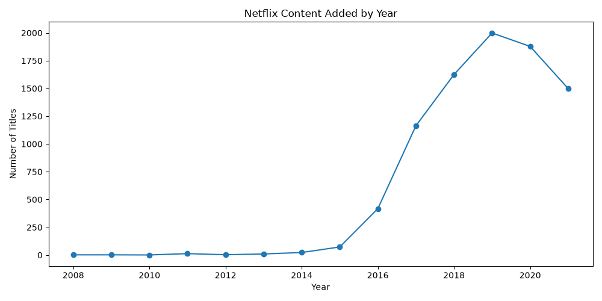

Netflix catalogue analysis
An exploratory project on a public snapshot of the Netflix catalogue — the kind of analysis that is easy to make look impressive and easy to get wrong, because the dataset is a photograph of a moving object.
The question
What changed in the catalogue
Four angles: how the volume of additions changed over time, the movie/TV split, which countries the catalogue is credited to, and which age ratings dominate.
The data
One table, twelve columns
netflix_titles.csv — 8,807 rows × 12 columns: show_id,
type, title, director, cast,
country, date_added, release_year,
rating, duration, listed_in,
description. The file is committed with the notebook, so the analysis is
reproducible without a download.
Because it is a snapshot, the column that matters most is not release_year but
date_added: the last entry is 2021-09-25, so any year-on-year
comparison has to account for the final year being only three-quarters complete.
Result
Growth, then a cliff that is not a cliff

- The final drop is an artefact. 2021 covers about nine months, so the last point measures the dataset's collection window, not Netflix's strategy. Reading the downward slope as a shrinking catalogue is the obvious mistake, and the reason I plot the boundary of the data rather than a smooth trend line.
- Movies dominate. About 70 % of titles are movies rather than TV shows.
- Production is concentrated. The United States accounts for close to 2,800 titles — nearly three times second-place India.
- Mature audiences are the target. TV-MA and TV-14 dominate the ratings; family ratings such as TV-Y and TV-G are marginal.
Limitations
What the snapshot cannot support
country
field lists co-productions in one cell and the field was not split, so a title credited to
three countries is counted three times. The US concentration is real in direction but its
magnitude is inflated by that choice.
- The data is a single snapshot of one catalogue in one region: it cannot speak to viewing behaviour, licensing cost, or what other regions see.
- The truncated final year makes the last two points of the growth curve uninterpretable as a trend without an explicit correction.
- Missing values in
directorandcastare not random — they cluster in certain content types — so any analysis of them would need that checked first.